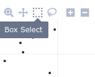
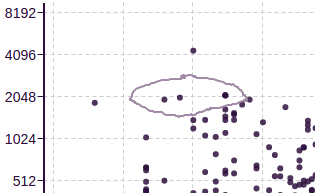

Instructions
Choose a dataset and condition for each axis using the controls on the left.
For the x-axis and y-axis conditions, you are free to include and exclude any groups from the categorical observations. But if you are performing a significance test between then two conditions, then ensure that just a single differing group is chosen for each condition.
Some observation metadata may be listed as non-categorical, and will be excluded from consideration. If some observations (such as sample ID or timepoint) are erroneously in this list, it may be because they were loaded in such a way that the dataframe reader interpreted them as continuous (numerical) datatypes.
Feedback on the dataset comparison tool is welcome.
There was a problem loading this comparison graph. Please check the error message below and confirm plot selections are valid. If you need additional help, please submit for help with the following information:
- Dataset ID:
- Dataset Name:
- Dataset X condition:
- Dataset Y condition:
- Error:
Plot controls
Selected genes
genes saved into cart
Hover over the plot and you'll see buttons on the right side, which control actions like zooming and selection of points.
- Control icons
-
The Box and Lasso selection tools allow you to click and drag a shape around genes of interest.
- Selecting genes
-
After you select your desired genes, a list of them all will be displayed.
| Gene | FoldChg | Pval |
|---|